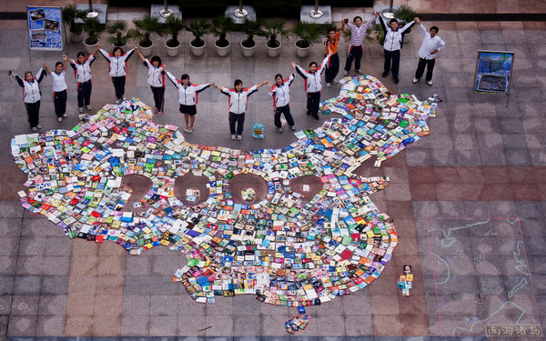

Miscellaneous
Photography
Origami
Sierpiński tetrahedron (with Boying Meng)
Mural
(with Boying Meng)
Digital
You can get this shirt via CustomInk here.
Graphic Design
West Side Story program
Disclaimer: I only do graphic design when I absolutely have to, as evident from this website.
Collage

(with NFLS Photography Club)
Embroidery